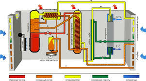
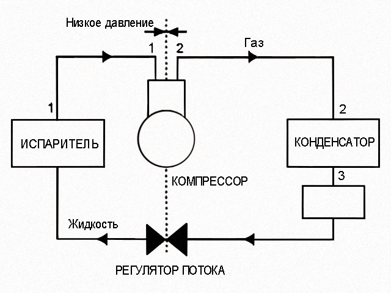

1. Назначение установки
Парокомпрессионная холодильная машина используется для создания холода в различных системах охлаждения. Основной принцип работы заключается в использовании холодильного агента, который циркулирует в замкнутом контуре и проходит через четыре основные стадии: компрессия, конденсация, расширение и испарение.

2. Принцип действия
Принцип действия основан на законах термодинамики. Один из ключевых законов — это закон Карно, который описывает максимальный КПД тепловых машин.
3. Компрессор и его работа
Компрессор повышает давление и температуру холодильного агента, переводя его из газообразного состояния в жидкое. Это происходит по принципу, описанному уравнением pV-диаграммы.
4. Конденсатор и испаритель
Конденсатор отводит тепло от хладагента и переводит его в жидкое состояние. Испаритель, наоборот, отводит тепло из охлаждаемой среды, превращая хладагент в газ. Это связано с теплотой парообразования.

5. Законы термодинамики
Действие парокомпрессионной машины подчиняется основным законам термодинамики, таким как Первый закон термодинамики, который описывает сохранение энергии в системе.